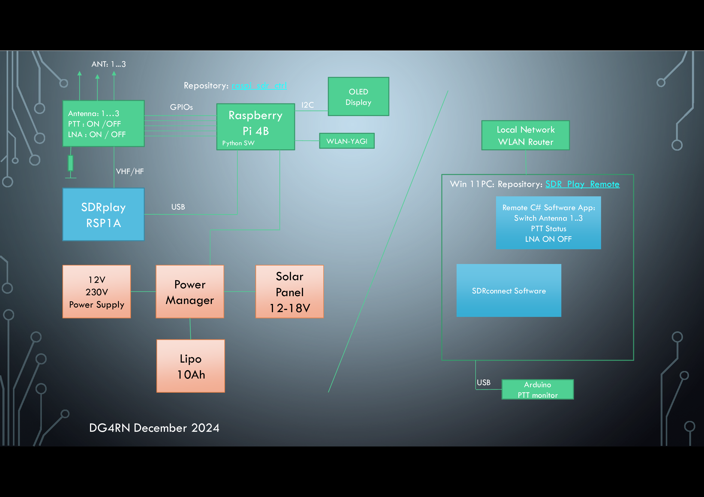

DG4RN
SDR_Play_Remote
Windows part of remote controlling different antenna inputs for sdr receiver RSP1A. SDR receiver is running in remote location connected to raspberry pi 4b. By use of an extra pcb is it possible to switch different antennas inputs. Additionally the sdr reciver input will be terminated with 50 ohm if the local ham radio is transmiting.
